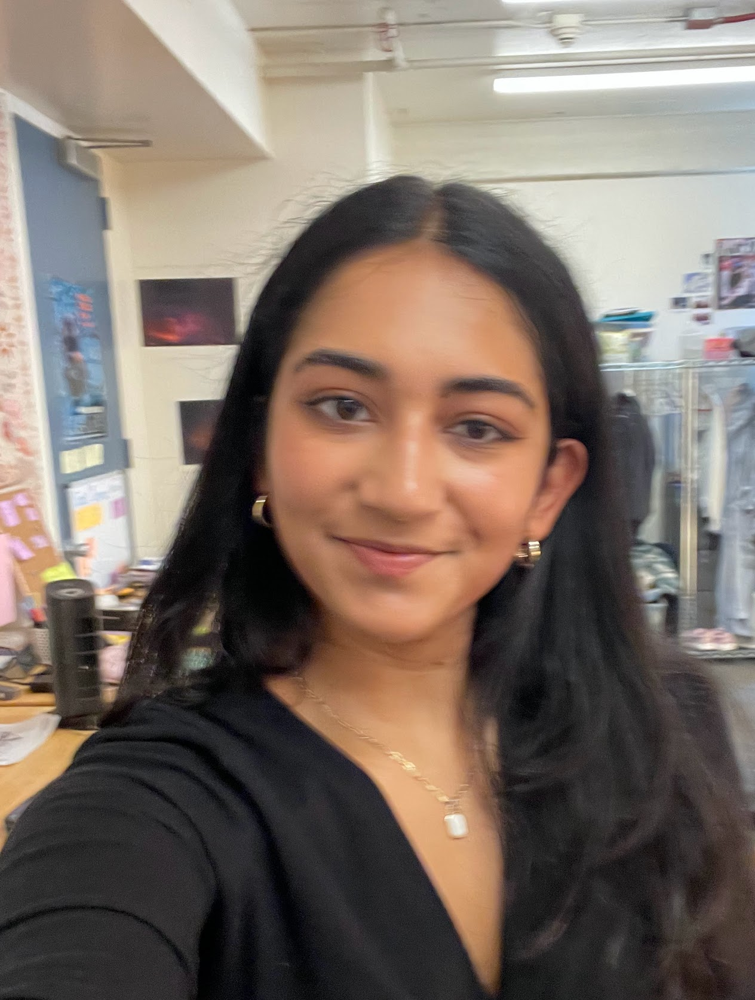

Aashna Patel
Major: Cognitive Science
I am a freshman at UC Berkeley. I enjoy dancing, design, binging TV shows and movies, listening to music, trying new foods, and writing. I'm also from the Bay Area, California.
My favorite food/drink places at UC Berkeley:
- Browns Cafe
- Yi Fang
- Artichoke's Pizza

My favorite site
- I learned how to be more observant of the way apps are designed, including the criteria mentioned: hierarchy, content, intent, and audience. As I looked at the examples, Warner brought up interesting details that I didn’t notice before on these different apps, including the wording and boldness of the text on buttons.
- My favorite part of the article was looking closer at the design of popular apps and starting to think more about all of the components that are behind designs. Warner brought up some questions on why certain design choices were made.
- “Know the rules, so you can break em”
- 8